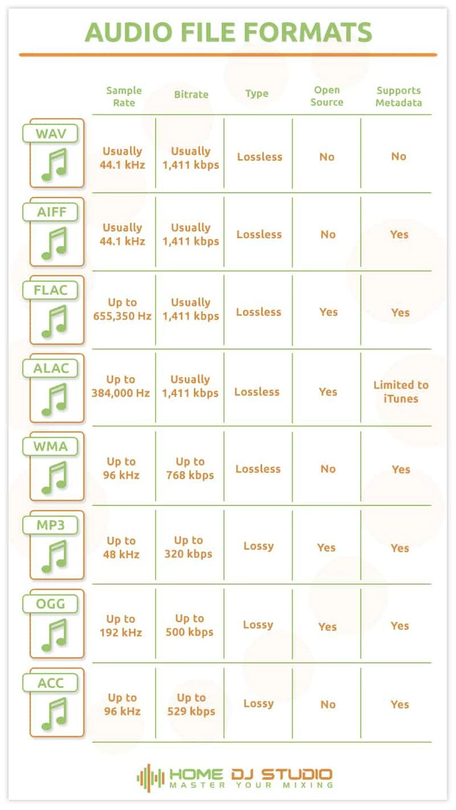

Sabemos que los formatos de audio digital son, básicamente, contenedores. Y las diferencias entre ellos
están fundamentalmente en:
- Si están o no comprimidos.
- Si están comprimidos, en la calidad de la compresión.
- El tipo de etiquetado que pueden soportar.
A continuación, se enlistarán una vez más los formatos explorados
por este sitio, cada uno con una concisa definición como resumen final:
- MP3: MPEG Layer-3 es sin duda el formato de audio más popular actualmente y el estándar para la
transferencia y reproducción de música en la mayoría de los reproductores de audio digital, ya que su
compresión tan solo elimina partes del archivo que son inaudibles. Y es que un archivo mp3 se comprime
alrededor de una décima parte del tamaño de un archivo PCM, por lo
que se hace posible que mantenga una buena calidad de audio.
- AAC: Por sus siglas –en inglés- significa Advanced Audio Coding. Se refiere a un formato de archivo
basado en MPEG2 y MPEG4 que generalmente es contenedor ADTs o ADIF.
- Ogg-Vorbis: Al hablar de ogg es referirse a un formato de archivo contenedor abierto y libre que además
es compatible con una variedad de códecs de audio, como, Vorbis, por ejemplo. Y aunque los archivos
Vorbis son a menudo comparados con los MP3 por su calidad, los .ogg no son tan recomendados porque los
mp3 son ampliamente admitidos.
Se trata de un códec de audio digital general libre con pérdidas que usa el formato de archivo de audio
o contenedor. Fue desarrollado por la Fundación Xiph.Org.
- FLAC: Es el códec recomendado para el almacenamiento de archivos PCM, como, música o difusión, por
ejemplo, en los que sea muy importante la calidad. Y es que por su siglas en inglés, Free Lossless Audio
Codec, flac es un códec de compresión sin pérdida
que para entenderlo mejor, funciona como un archivo zip pero para audio. O sea, al comprimirse un
archivo PCM en flac y luego se restaura nuevamente, se obtendría una copia exacta del original.
- Por sus siglas en inglés, Windows Media Audio; y se refiere al formato de audio protegido de copia, ya
que fue desarrollado por Microsoft con habilidades de gestión de derechos digitales.
Por último, se muestra una comparación general de todos estos formatos y algunas de sus características:
